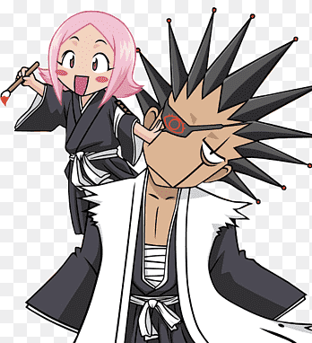

📝 Cadastro
Cadastre-se para fazer parte do nosso universo de Bleach!
Início
Cadastro
Produção
Serviços
Pesquisas
Portfólio
Produtos
Parceiros
Contate-nos
Ouvidoria
Seja um Ceifeiro
Cadastro de fã

Zaraki e sua companheira Yachiru.
Seus dados
Nome:
Idade:
E-mail:
Data de nascimento:
Personagem favorito:
Zaraki Kenpachi
Yachiru Kusajishi
Ichigo Kurosaki
Rukia Kuchiki
Outro
Você gosta do Zaraki?
Sim!
Não
O que você mais gosta em Bleach?